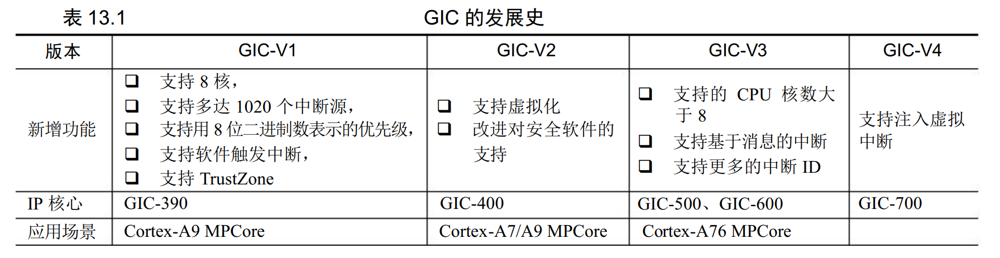
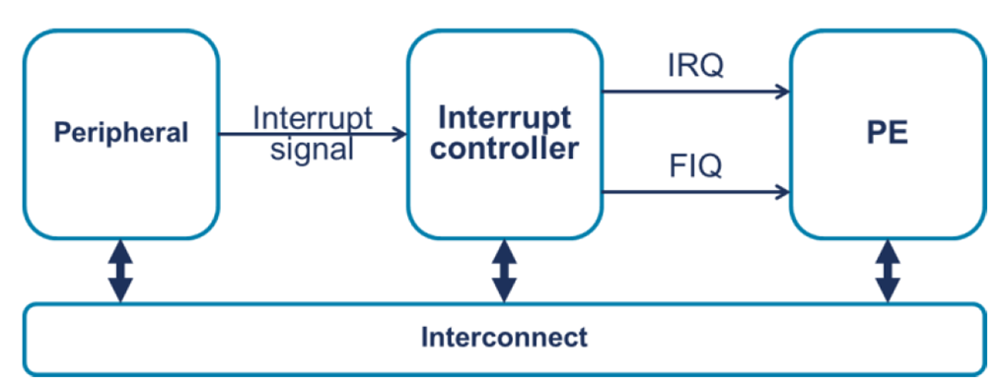
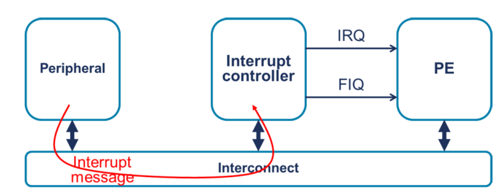
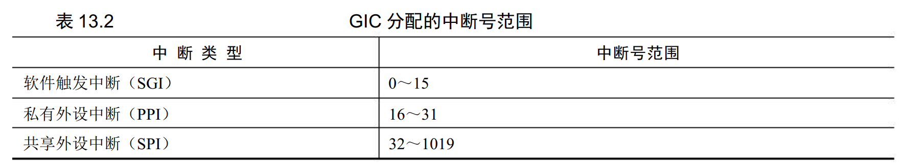
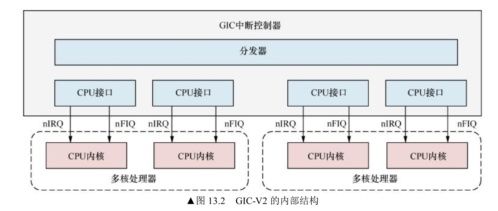
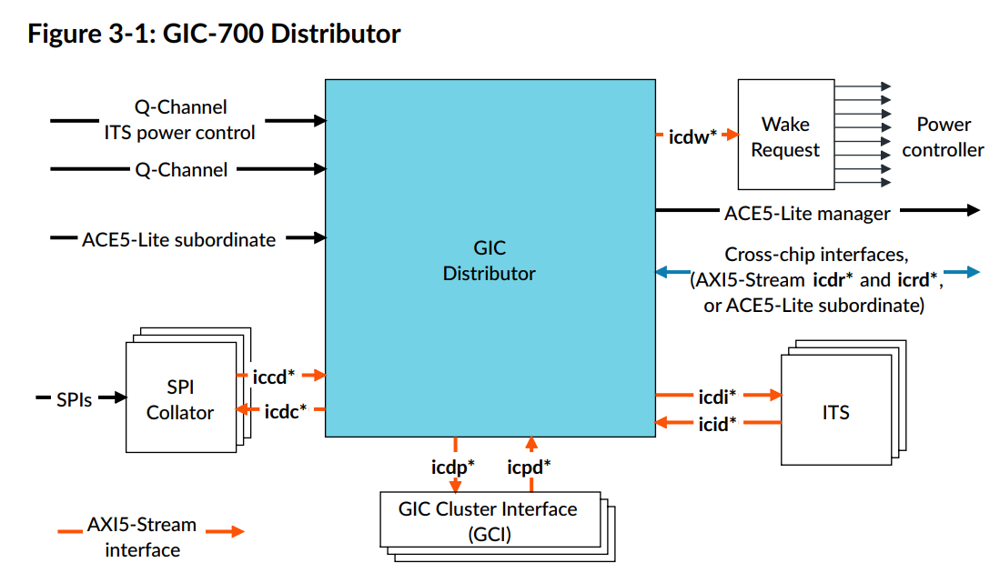
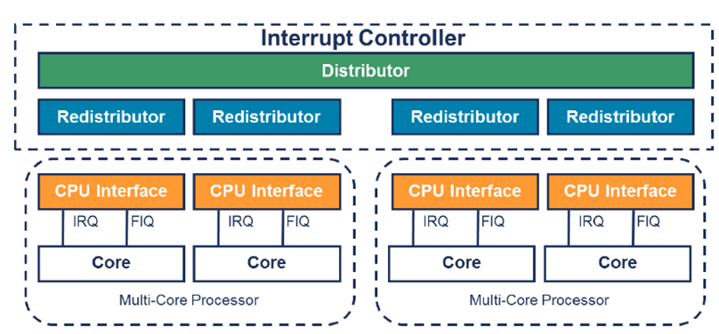
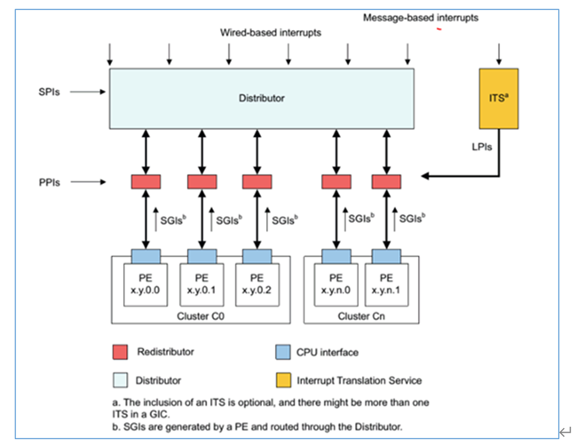
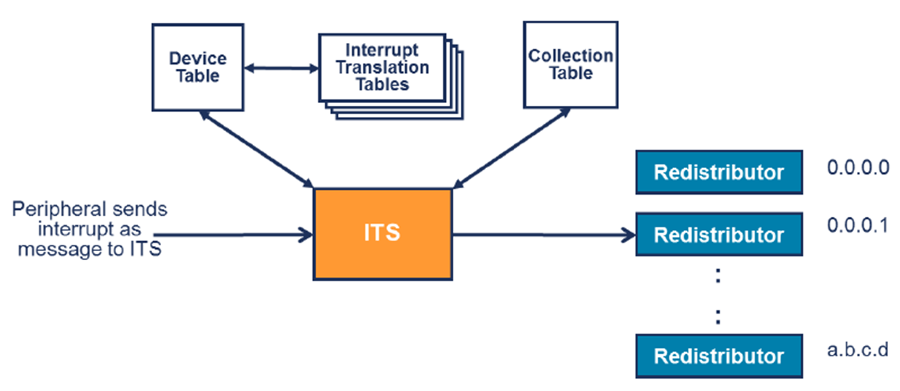

ARM GIC
[toc]
GIC 发展
在早期 ARM 系统（例如 ARM7 和 ARM9）中， 采用单核处理器设计，系统支持的中断源 比较少并且是单核处理器系统，使用简单的寄存器表示每个中断源的使能、关闭以及状态。假 设系统一共有 64 个中断源，每个寄存器一共有 32 位，每位描述一个中断源，那么只需要两个 中断使能寄存器（Interrupt Enable Register， IER）。 同理， 中断状态寄存器（Interrupt Status Register，ISR） 也只需要两个寄存器就够了。
在现在越来越复杂的 SoC 中，中断管理变得越来越困难，原因主要有以下几个方面：
- 中断源变得越来越多，有的系统中断源有几百个，甚至上千个。
- 中断类型也越来越多，比如普通的外设中断、软件触发的中断、 CPU 内核间的中断， 还有类似于 PCIe 上基于消息传递的中断等。
- 需要考虑虚拟化的支持。
比如，某个服务器芯片，有几十个core，每个core可能有多个中断，有多个PCIe子系统，一个子系统可能有500多个中断。
出于上面几个原因， ARM 公司开发了 GIC， 专门用来管理中断。 目前最新版本是 V4，典型 的 IP 是 GIC-700。 GIC 的发展史如表 13.1 所示。 其中， GIC-V1 指的是协议或者规范的版本， 而GIC-390 指的是具体中断控制器 IP 的型号。 ARM 公司先要制定出规范，然后再设计和实现 IP。

C2K使用的是GIC V4.1.
传统模式

MSI模式

GIC-V3
GIC-V3 主要新增了基于消息传递的中断，类似于 PCIe 中 MSIX 中断。 传统的中断源是需 要一个引脚的，而基于消息传递中断则不需要，只需要在设备内存里写入寄存器就触发中断， 该方案非常合适 PCIe 这类设备，因为 PCIe 上物理引脚有限。另外， GIC-V3 支持 CPU 的内核数量大于 8，适合于服务器处理器。基于 GIC-V3 规范开发的 IP 内核有 GIC-500 和 GIC-600。
GIC-V4
GICv4相较于GICv3的主要新功能和改进：
- vPE（虚拟处理单元）概念
GICv4引入了虚拟处理单元（vPE）的概念，增强了对虚拟化的支持。
- 虚拟中断重定向：GICv4允许直接将虚拟中断重定向到虚拟处理单元（vPE），这意味着虚拟中断可以直接投递给虚拟机而不需要先由虚拟机监控器（Hypervisor）处理。这减少了中断延迟，提高了虚拟化环境的性能。
- 直接中断注入
GICv4支持直接中断注入（Direct Injection），使得中断处理更加高效。
- 直接虚拟中断注入：GICv4允许直接将中断注入到运行中的虚拟机中，而不需要先中断虚拟机监控器。这个功能减少了中断处理的开销，提高了系统的性能。
- 增强的虚拟化支持
GICv4提供了更好的虚拟化支持，使得中断管理在虚拟化环境中更加高效和灵活。
- 对vPE的直接管理：GICv4允许虚拟机监控器直接管理和控制虚拟处理单元（vPE），从而更好地分配和控制虚拟中断。
- 硬件辅助中断处理
GICv4在硬件上增强了对中断处理的支持，减少了软件处理的负担。
- 虚拟中断控制器（vLPI Control）：GICv4支持虚拟中断的硬件处理，可以更高效地管理和分发虚拟中断。
- 扩展的中断优先级
GICv4扩展了中断优先级的范围，使得中断的优先级管理更加灵活。
- 更细粒度的优先级控制：GICv4支持更精细的优先级控制，允许对中断进行更精确的管理。
- 中断组的增强
GICv4提供了对中断组的更灵活管理。
- 中断组和组安全性：GICv4增强了对中断组的支持，允许对中断组进行更灵活的配置和管理，提高了系统的安全性和隔离性。
中断状态
每一个中断支持的状态有以下 4 种。 不活跃（inactive）状态：中断处于无效状态。 等待（pending）状态：中断处于有效状态，但是等待 CPU 响应该中断。 活跃（active）状态： CPU 已经响应中断。 活跃并等待（active and pending） 状态： CPU 正在响应中断， 但是该中断源又发送中断过来。
外设中断支持两种中断触发方式。 边沿触发（edge-triggered）：当中断源产生一个上升沿或者下降沿时，触发一个中断。 电平触发（level-triggered）： 当中断信号线产生一个高电平或者低电平时， 触发一个中断。
GIC组成
对于 GIC 来说， 为每一个硬件中断源分配的中断号就是硬件中断号。 GIC 会为支持的中断 类型分配中断号范围，如表

具体每个SoC设计各不相同，以下以GIC-V2为例。
- SGI 通常用于多核之间的通信。SGI通常在Linux内核中被用作处理器之间的 中断（Inter-Processor Interrupt， IPI）， 并会送达系统指定的 CPU 上。
- PPI 是每个处理器内核私有的中断。PPI 通常会送达指定的 CPU 上，应用场景有 CPU 本地定时器（local timer）。
- SPI 是公用的外设中断。
SGI 和 PPI 是每个 CPU 私有的中断，而 SPI 是所有 CPU 内核共享的。
GIC 主要由分发器（distributor）和 CPU 接口组成。分发器具有仲裁和分发的功能，分发 器为每一个中断源维护一个状态机，支持的状态有不活跃状态、等待状态、活跃状态和活跃并 等待。

GIC-V2 是由两个硬件单元组成的， 一个是分发器， 另一个是 CPU 接口（CPU interface），如图 13.2 所示。分发器主要用来做仲裁和分发， CPU 接口是与 CPU 内核连接的模块。分发器只有一个，是共用的，但是每个 CPU 内核有一个 CPU 接口，它们通过 nIRQ 与 nFIQ 这两个引脚和 CPU 内核连接在一起。
GIC-700
GIC-700中的组成：

gic-v3 的组成模块，分别是 Distributor 、Redistributor 、CPU interface 和 ITS （Interrupt Translation Service）。
其中，
-
Distributor 主要负责 SPI 的管理（priority、affinity、trigger-type），与推送 sgi 、spi 至指定的 Redistributor 。
-
Redistributor 主要负责 PPI 、LPI 的管理（priority、affinity、trigger-type），与推送 PPI 、LPI 送至 CPU interface。
-
CPU interface 负责接收来自 Redistributor 的中断信号，选择合适的中断发送给 CPU，并根据 CPU 的应答动作，协同 Distributor 和 Redistributor 完成中断状态机的状态迁移。
-
ITS 是可选模块，负责接收外设的 msi 消息，并将 msi 消息转换成 LPI 提交给指定的 Redistributor 。
| 英文缩写 | 英文全称 | 说明 |
|---|---|---|
| GIC | General Interrupt Controller | 通用中断控制器 |
| SGI | Software Generated Interrupt | 核间通信 |
| PPI | Private Peripheral Interrupt | 私有中断 |
| SPI | Shared Peripheral Interrupt | 共享中断 |
| LPI | Locality-specific Peripheral Interrupt | 消息中断 |
| PE | Process Element | 处理器单元 |
| ITS | Interrupt Translation Service | 中断翻译服务 |
| 中断 | 功能需求 |
|---|---|
| SGI | ① 可配置中断优先级 ② 触发SGI中断后，该中断会根据不同的security状态和中断group，发送到对应的PE（所有连接的PE / 一组PE） |
| PPI | ① 可配置中断优先级 ② 触发PPI中断，会被路由到特定的处理器上 |
| SPI | ① 可配置中断优先级 ② 可配置中断的触发方式 ③ 根据路由配置发送到对应的PE（某个PE / 一组PE） |
| LPI | ① 确认LPI实现方式（forwarding方式/ITS方式），并实现相关配置 ② 可配置中断优先级 |
以下基于linux kernel 5.10。
| 中断类型 | 中断号 | 说明 |
|---|---|---|
| SGI | 0 - 15 | 每个PE都会备份 |
| PPI | 16 – 31 | 每个PE都会备份 |
| SPI | 32 - 1019 | |
| 特殊中断号 | 1020 - 1023 | |
| 保留中断号 | 1024 - 1055 | |
| 扩展PPI | 1056 -1119 | GICv3.1版本后才支持 |
| 保留中断号 | 1120 - 4095 | |
| 扩展SPI | 4096 - 5119 | GICv3.1版本后才支持 |
| 保留中断号 | 5120 - 8191 | |
| LPI | 8192 - | 最大支持的中断号由实现确定 |
可以看到 LPI 的中断号是从 8192 开始的，具体实现多少个 LPI 中断由实现决定。设计人员会在 GICD_TYPER 寄存器 IDbits field 中告知软件具体实现了多少个 LPI。


注意区别：
GCI，即GIC Cluster Interface，包含了一个cluster的所有Redistributor；在c2000中，一个EXG对应一个cluster，包含一个core，8个thread；所以一个GCI包含了总共8个Redistributor
c2k框架中的ICI模块为自研模块，对应ARM的CPU interface模块
SGI 中断
核间通信：大core A发起请求，到CPU interface，到GICD路由，再发送到目标threadde GICR中，在通过interface给到对应的thread。
PPI 中断
私有中断：PPI中断源拉高，进入GICR，通过interface进入指定的thread。
比如EXG自己的timer。
SPI 中断
外设中断：SPI 拉高，GICD根据路由信息，发送到对应的GICR，GICR通过interface到对应的thread。
比如PCIe子系统中的中断。
LPI 中断
消息中断：MSI 进来，ITS翻译，找到对应的GICR，GICR通过interface到对应的thread。

整体处理流程如下；
-
外设写内存产生中断给ITS，外设写的内容包含device id和event id，device id用于标识设备，event id用于区分同一个设备不同的中断。
-
ITS在内存中有以下三张表，通过这三张表可以知道将中断路由到哪个GICR即哪个CPU：
a) Device table用于保存每个device对应的ITT中断转换表；
b) ITT表用于保存设置event id与collection id的对应关系；
c) Collection table用于保存collection id与GICR的对应关系。
- ITS驱动或软件通过三种方式与ITS进行通信：通过直接访问ITS寄存器、通过访问或修改三张表、通过CMDQ队列。
问题来了，为什么c2k设计MSI是its->gicd->gicr ？按照arm的理解是，its通过一系列查表之后得到redistributor（GICR）之后不需要在经过distributor(GICD)了？
咨询前端设计的同事得知，GICD是中心连接其他模块，其他模块没有互联的通路。因此ITS每一次查表都要经过GICD，GICD负责去读ddr查表，然后给到GICR。c2k设计图中反应的是硬件通路，而arm的拓扑关系并没有反映出这一点